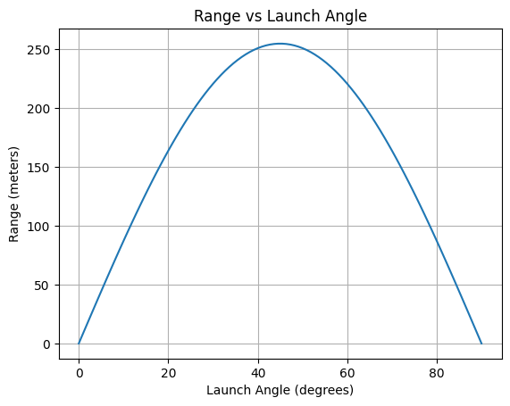
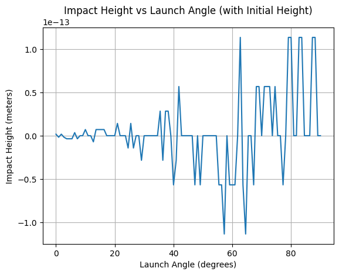

⚙️ Mechanics – Problem 1
ü߆ Mechanics Problem 1: Investigating the Range as a Function of the Angle of Projection
üéØ Problem Overview
We study the dependence of the horizontal range of a projectile on the launch angle \( \theta \), taking into account physical parameters such as:
- Initial velocity \( v_0 \)
- Gravitational acceleration \( g \)
- Air resistance (optional)
- Launch height \( h \)
- Inclined terrain
üìê 1. Ideal Projectile Motion (No Air Resistance)
Coordinate System
We decompose the motion into horizontal and vertical components.
Equations of Motion:
Initial velocity components:
\[
v_{0x} = v_0 \cos(\theta), \quad v_{0y} = v_0 \sin(\theta)
\]
Displacements:
\[
x(t) = v_0 \cos(\theta) \cdot t
\]
\[
y(t) = v_0 \sin(\theta) \cdot t - \frac{1}{2} g t^2
\]
Time of flight (when \( y = 0 \)):
\[
T = \frac{2v_0 \sin(\theta)}{g}
\]
Range:
\[
R(\theta) = x(T) = \frac{v_0^2 \sin(2\theta)}{g}
\]
üßÆ 2. Python Implementation (Ideal Case)
import numpy as np
import matplotlib.pyplot as plt
g = 9.81 # gravity [m/s^2]
angles_deg = np.linspace(0, 90, 500)
angles_rad = np.radians(angles_deg)
def ideal_range(v0, theta):
return (v0**2 * np.sin(2 * theta)) / g
v0_values = [10, 20, 30]
plt.figure(figsize=(10, 6))
for v0 in v0_values:
R = ideal_range(v0, angles_rad)
plt.plot(angles_deg, R, label=f"$v_0 = {v0}$ m/s")
plt.title("Range vs Angle (Ideal Case)")
plt.xlabel("Launch Angle (degrees)")
plt.ylabel("Range (meters)")
plt.legend()
plt.grid(True)
plt.savefig("ideal_range.png")
plt.show()
üèîÔ∏è 3. Uneven Terrain (Inclined Plane)
Let the ground be inclined by angle \( \alpha \). The effective launch angle becomes \( \theta - \alpha \), and time of flight changes accordingly.
Time to impact (from projectile to slope):
\[
T = \frac{2 v_0 \sin(\theta - \alpha)}{g \cos(\alpha)}
\]
Modified range on inclined plane:
\[
R = \frac{v_0^2 \sin(2(\theta - \alpha))}{g \cos(\alpha)}
\]
This is derived assuming a symmetrical trajectory in the slope frame.
üå¨Ô∏è 4. Air Resistance (Linear Drag)
When air resistance is considered, the force becomes:
\[
\vec{F}_{\text{drag}} = -k \vec{v}
\]
Where \( k \) is the drag coefficient.
Equations of motion:
\[
\frac{d v_x}{dt} = -\frac{k}{m} v_x, \quad \frac{d v_y}{dt} = -g - \frac{k}{m} v_y
\]
Solutions:
\[
v_x(t) = v_{0x} e^{-kt/m}, \quad v_y(t) = \left(v_{0y} + \frac{mg}{k} \right) e^{-kt/m} - \frac{mg}{k}
\]
Position functions (after integration):
\[
x(t) = \frac{m v_{0x}}{k} \left(1 - e^{-kt/m} \right)
\]
\[
y(t) = \left(v_{0y} + \frac{mg}{k} \right) \cdot \frac{m}{k} \left(1 - e^{-kt/m} \right) - \frac{mg}{k} \cdot t
\]
These equations require numerical solutions for time of flight and range.
 